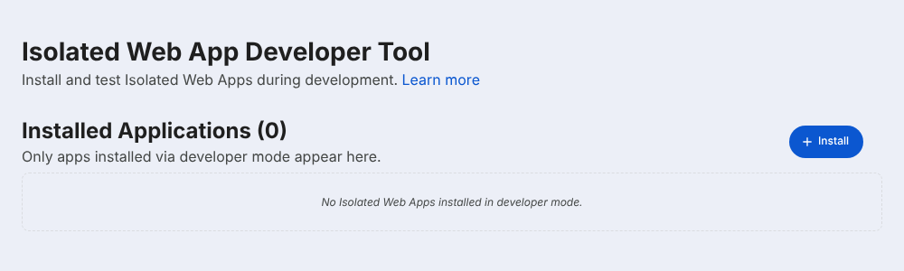
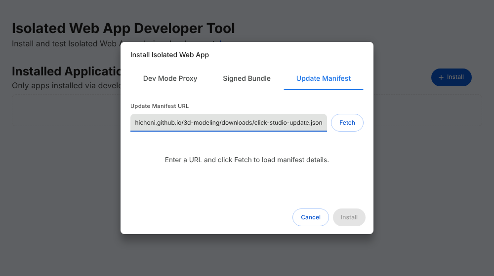

BEFORE YOU START
준비물
✓ 크롬북 (ChromeOS 최신 버전 권장)✓ 같은 Wi-Fi에 연결된 Bambu Lab A1 mini✓ 프린터 화면을 직접 조작할 수 있을 것
학교에서 관리하는 크롬북은 3단계 설정이 막혀 있을 수 있어요. 그럴 땐 학교 크롬북 안내를 보세요.
Click Studio 앱을 크롬북에 한 번 설치하면 같은 Wi-Fi의 A1 mini를 찾아 바로 연결해요.
모델링·슬라이싱·전송·출력까지 출력 PC 없이 앱 안에서 끝나요.
실제 Chromium에 설치한 앱과 모의 A1 mini로 처음부터 끝까지 시험했어요. 실제 A1 mini·크롬북 조합은 아직 시험하지 않았어요. 안 되면 기존 출력 PC 방식으로 출력할 수 있어요.
학교에서 관리하는 크롬북은 3단계 설정이 막혀 있을 수 있어요. 그럴 땐 학교 크롬북 안내를 보세요.
Click Studio 크롬북 앱 · 서명된 웹 앱 파일
받은 파일은 크롬북의 다운로드 폴더에 저장돼요. 열거나 압축을 풀 필요는 없어요.
웹 페이지에서는 Chrome 설정 주소를 바로 열 수 없어요. 아래 주소를 복사해 새 탭 주소창에 붙여넣으세요.
chrome://flags/#enable-isolated-web-app-dev-modeChrome 154부터 설치 화면이 chrome://iwa-dev로 옮겨졌어요. 아래 주소를 새 탭에 여세요.
chrome://iwa-dev
https://hichoni.github.io/3d-modeling/downloads/click-studio-update.json
그 방식은 “설치 번들을 확인하는 중…” 뒤에 “앱을 설치할 수 없음”이 나올 수 있어요. Google 허용 목록에 등록된 앱만 그렇게 설치되는 것으로 보이며, 이 앱은 아직 등록 전이에요. 위 방법 A·B를 쓰세요.
설치가 끝나면 런처(앱 목록)에 생긴 Click Studio를 열어요. 자주 쓰면 선반에 고정하세요. Chrome 버전이 낮아 chrome://iwa-dev가 없으면 chrome://web-app-internals 맨 위의 Isolated Web Apps 칸에서 같은 방법으로 설치해요.
새 버전이 나오면 chrome://iwa-dev의 앱 옆 Update를 누르거나 같은 방법으로 다시 설치하면 업데이트돼요. 등록한 프린터는 그대로 남아요.
여러 크롬북과 여러 미니를 쓸 때는 크롬북마다 미니 한 대씩 등록하면 돼요. 다른 기기가 출력 중인 미니는 끝날 때까지 시작할 수 없어요.
정상이에요. Chrome 154부터 그 페이지는 기록 보기용이고, 설치 화면은 chrome://iwa-dev로 옮겨졌어요. 4단계를 따라 하세요.
3단계 설정이 적용되지 않은 상태예요. flags에서 Enabled로 바꾼 뒤 Restart를 눌렀는지 확인하세요. chrome://version에서 Ctrl + F로 IsolatedWebAppDevMode가 보이면 적용된 거예요.
학교·기관 계정이면 개발자 도구 정책이 막고 있을 수 있어요. chrome://policy에서 DeveloperToolsAvailability 값이 2면 막힌 상태예요. 학교 Google 관리자에게 선생님 계정의 개발자 도구 허용을 요청하거나, 개인 크롬북 또는 기존 출력 PC 방식을 쓰세요.
학교 계정 크롬북은 보통 Chrome 설정 변경이 막혀 있어요. 학교 Google 관리자에게 관리 콘솔에서 이 앱을 Isolated Web App으로 설치해 달라고 요청하세요.
웹 번들 IDhttps://hichoni.github.io/3d-modeling/downloads/click-studio-update.json관리 정책 설치에는 Google의 IWA 허용 목록 등록이 필요해요(Chrome 143부터). 아직 등록 신청 전이라, 그동안은 개인 크롬북이나 출력 PC 방식을 쓰세요.
전원, 같은 Wi-Fi, LAN Only를 확인하세요. 학생용·손님용 Wi-Fi는 기기끼리 통신을 막는 경우가 많아요. 그래도 안 되면 검색이 안 될 때: IP·일련번호 직접 입력을 펼쳐 프린터 화면의 IP를 넣고 이 IP의 일련번호 자동 확인을 누르세요.
코드는 LAN Only를 껐다 켜면 바뀌어요. 프린터 화면에 지금 보이는 8자리를 다시 입력하세요. 대소문자도 그대로 입력해요.
프린터 설정 → LAN Only 화면에서 개발자 모드를 켜세요. 최신 펌웨어는 개발자 모드가 꺼져 있으면 서명 없는 출력 명령을 거절해요.
입력한 IP가 다른 기기이거나 일련번호가 다를 때 나와요. 앱은 Bambu Lab 인증서와 일련번호가 맞는 프린터에만 코드를 보내요. 프린터 화면의 IP와 기기 정보의 SN을 다시 확인하세요.
이 크롬북의 Click Studio 앱 전용 저장소에만 저장되고 어떤 서버로도 보내지 않아요. 등록을 지우려면 프린터 연결 창의 이 크롬북에서 이 프린터 등록 삭제를 누르세요.
일반 웹 페이지는 프린터의 파일 전송·상태 통신을 직접 열 수 없어요. 설치한 앱만 Chrome의 Direct Sockets 기능으로 프린터와 직접 통신해요. 웹에서는 모델링·슬라이싱까지 되고, 출력은 앱이나 출력 PC가 필요해요.
자세한 기술 내용: CHROMEBOOK_DIRECT.md ↗ · Isolated Web Apps ↗ · Bambu 개발자 모드 ↗